El término técnico contabilidad, proviene de la voz latina “computare” que significa contar. Verbo éste, que incluye dos acepciones que son:
Narrar
Hace referencia, a que un sistema de contabilidad debe ser narrativo en cuanto al orden cronológico de operaciones y/o actividades, suscitadas en una empresa a una determinada fecha.
Computar
Hace referencia, a que en contabilidad necesariamente todas las operaciones o transacciones deban valuarse en términos de unidades monetarias y expresarlas en cantidades, para de esta manera poder operar, desde la simple aritmética hasta la matemática más avanzada que pueda ser aplicada.
Definicion
El proceso contable es el ciclo que ocurre entre la ocurrencia, el registro y el procesamiento de las operaciones financieras que se realizan en una empresa. Es decir, se trata de una secuencia de actividades que conlleva al registro detallado de cómo se reciben, se cobran y se pagan bienes y servicios en una organización.
Actividades
Ese registro se realiza en los libros o cuadernos contables. Es un proceso que se da por etapas y que se reinicia constantemente. En él se recopila información financiera que luego se presenta en forma de reportes denominados estados financieros.
La Contabilidad es la ciencia que estudia el patrimonio y las variaciones que en él se producen proporcionando una imagen fiel de la situación y del Patrimonio. Para ello se han de registrar todas las operaciones realizadas por una empresa, de tal forma que dichas anotaciones den a conocer la exacta situación económica de la misma. El fin de la Contabilidad es la medición del Patrimonio, tanto en su aspecto estático como en su aspecto dinámico, y mide dicho patrimonio en su aspecto cuantitativo (cuánto vale) y cualitativo (qué elementos componen el patrimonio), registrándose todas las variaciones patrimoniales que se produzcan y calculándose así los resultados obtenidos por la empresa. En resumen, la contabilidad es la técnica que se utiliza para el registro de todas las operaciones de la empresa, para el conocimiento de su Patrimonio y para el cálculo de los Resultados.
Víctor Maldonado
"La contabilidad es la ciencia, rama de las matemáticas, que tiene el objeto llevar Cuenta y Razón del movimiento de las riquezas públicas y privadas con el fin de conocer sus resultados."
William L. Chapman
“La contabilidad es el conjunto de postulados teóricos de validez practica comprobada, adoptados para el registro, la clasificación y el resumen racional de los hechos y actos de carácter económico financiero que afectan a las personas de existencia visible y a las de existencia ideal o jurídica, con el objeto de informar en términos monetarios principalmente acerca del estado del patrimonio a una fecha dada, y de la evolución experimentada por el mismo durante un periodo determinado”.
Enrique Fowler Newton
“La contabilidad es un elemento del sistema de información de un ente que proporciona datos sobre su patrimonio y la evolución del mismo destinados a facilitar las decisiones de los administradores y de los terceros que interactúan con él en cuanto se refiere a su relación actual o potencial con el mismo”.
Sergio García y Miguel Mattera
“La contabilidad es una disciplina técnica que se ocupa de la medición, registro, comunicación e interpretación de los efectos de actos y hechos susceptibles de cuantificación y con repercusiones económicas sobre el patrimonio de las entidades en general y que determinen el monto de la ganancia realizada con el propósito de contribuir al control de sus operaciones y a la adecuada toma de decisiones”.
Horngren/Sundem/Elliot
“La contabilidad es el medio principal para comunicar información relativa al impacto de las actividades financieras. Esta información se le proporciona a quienes toman decisiones en la forma de estados financieros. Para elaborar estos datos, los contadores analizan, registran, cuantifican, acumulan, resumen, clasifican, reportan e interpretan numerosos eventos y sus efectos financieros en la organización”.
Si practicamos un análisis de estas definiciones de contabilidad, se hace evidente la pluralidad de criterios y enfoques con relación al tema. Sin embargo, durante los últimos años la caracterización de la contabilidad como un elemento del sistema de información de una empresa, ha venido ganando adeptos y superando viejos conceptos de que la contabilidad es solamente un elemento mantenido para posibilitar el cumplimiento de determinados requerimientos legales y fiscales.
La contabilidad tiene claramente establecido sus objetivos generales y específicos, a través de la aplicación de normas contables.
Objetivo general
El objetivo general de la contabilidad es proporcionar información a la gerencia para una acertada toma de decisiones.

Objetivos específicos
Los objetivos específicos de la contabilidad que coadyuvan directamente al general, radican en la obtención de estados financieros documentos mediante los cuales en forma resumida de acuerdo con normas de contabilidad y disposiciones legales, se proporciona a los usuarios de la información contable datos oportunos, verídicos y ordenados en términos de unidades monetarias, referidos a la situación patrimonial y financiera de una empresa a una determinada fecha y sus resultados obtenidos correspondientes a un determinado tiempo de trabajo. Obviamente, para proporcionar ésta información deben prepararse estados financieros, para tal efecto, la contabilidad se sirve de determinados medios o instrumentos de gran importancia que son: los registros de diario (Comprobantes de diario ingreso, egreso y traspaso), registros de diarios auxiliares (Según necesidades y requerimientos) registros da mayor, registros de mayores auxiliares, documentos (Testimonios de constitución, convenios, facturas liquidaciones, planillas de sueldos y salarios, acreditivos, pólizas de importación, letras de cambio, cheques estados de cuentas, etc.) balance de comprobación, hojas as trabajo, etc.
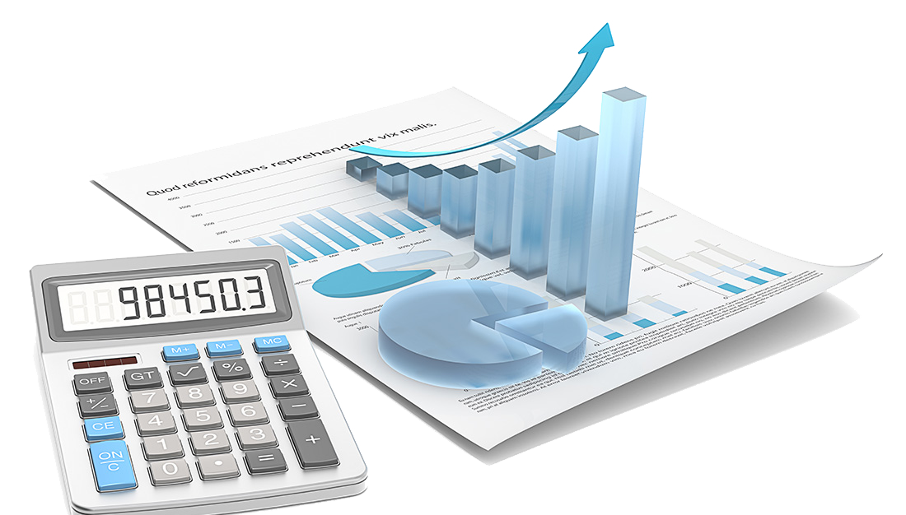Objetivos de la contabilización
El ciclo operativo hace referencia al proceso de tiempo que va desde la elaboración del bien o producto hasta su puesta en venta. También incluye el cobro.
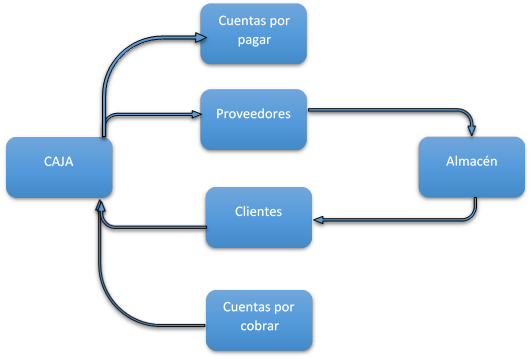Una parte de lo que se encuentra en caja, va destinado a la compra de productos de los proveedores, dichos productos se proceden a almacenar una vez los proveedores mandan los productos, del almacen se dirigen a la venta a los clientes, de esa venta se obtienen ganancias que iran a la caja, tambien tenemos ingresos en caja de las cuentas por cobrar, y de la caja tambien se puede destinar a las cuentas por pagar
La gestión económica de las asociaciones trata de definir y organizar el movimiento contable de ingresos y gastos, cobros y pagos producidos en las mismas para precisar el patrimonio de las mismas. Para llevar un buen funcionamiento financiero de la Asociación es necesario que establezcamos unas pautas o normas, en este apartado tratamos de definir todo lo referente al aspecto financiero de las asociaciones. Una buena gestión de los recursos económicos es fundamental a la hora de organizar una asociación, incluso cuando estamos empezando o no dispongamos de muchos ingresos. No olvidemos que para cualquier subvención o ayuda que solicitemos, vamos a tener que llevar una buena contabilidad y justificación de todos los gastos, así que la labor de la persona encargada de la tesorería es una labor a cuidar y supervisar por toda la Junta Directiva
Objetivos>
La contabilidad para un adecuado estudio y tomando en cuenta la diversidad de actividades empresariales, en función al giro específico de sus actividades, está clasificada en:
Contabilidad comercial
Comprende desde el sistema de registrador) contable hasta la preparación y emisión de estados financieros, que expresamente se refieren a empresas (unipersonales y/o sociedades mercantiles) dedicadas únicamente a la compra-venta de mercaderías y/o productos.
Contabilidad de costos
Parte muy importante, tiene por finalidad aplicar al proceso contable, sistemas especializados de costos y sus procedimientos a las siguientes actividades:
Contabilidad de servicios
Conjunto de actividades que su proceso contable, está orientado a operaciones relacionas a la prestación de servicios, que principalmente son:
Contabilidad de entidades financieras
Conjunto de actividades que su proceso contable, está orientado a operaciones relacionadas a la prestación de servicios, que principalmente son:
Contabilidad gubernamental
Trata la aplicación de procedimientos contables, a la contabilidad del estado en general, según su actividad específica, principalmente son:
La contabilidad tiene necesariamente que interrelacionarse directa o indirectamente con el resto de las demás ciencias. Sin embargo, con algunas de estas tiene relación más estrecha por la naturaleza de sus actividades, entonces diremos que se relaciona con:
Administración
Se relaciona con la administración, porque ésta, se encarga de proporcionarnos en sus fases administrativas de planificación, organización, dirección y control empresarial procedimientos tendientes a conducir científicamente cualquier tarea o trabajo a realizarse entre las unidades administrativas que componen una empresa. Razón por la cual, aplicar a estas fases las normas de contabilidad coadyuvan a lograr una eficiente y eficaz administración de recursos financieros humanos, materiales para alcanzar objetivos y metas trazados anteladamente.
Economía
Se relaciona con la economía, particularmente con la micro-economía en razón que ésta se encarga del estudio de los factores de la producción en una empresa, el comportamiento de los -precios en el mercado y los influjos de procesos inflacionarios, traducidos en la pérdida de valor de nuestro signo nacional. Razón por la cual, el aplicar normas de contabilidad a esos factores económicos implica un y reconocimiento contable destinados a generar información resumida en los estados financieros.
Derecho
El campo que abarca el derecho es bastante amplio, sin embargo, la contabilidad específicamente se relacionada con las siguientes partes de éste:
* Derecho comercial
Se relaciona con el derecho comercial, porque ésta parte del derecho, se encarga de proporcionamos normas que regulan actividades comerciales suscitadas en un determinado medio y deben ser reconocidas contablemente. En nuestro caso, estas disposiciones se encuentran tipificadas en el Código de Comercio.
* Derecho tributario
Se relaciona con el derecho tributario, porque ésta parte del derecho, se encarga de proporcionarnos normas que regulan actividades tributarias (impuestos, tasas, contribuciones, patentes, etc.)
* Derecho del trabajo
Se relaciona con el derecho del trabajo, porque ésta parte del derecho, se encarga de proporcionarnos normas que regulan actividades obrero-patronales desarrolladas en un determinado medio, mismas que deben ser reconocidas contablemente. En nuestro caso, estas disposiciones se encuentran tipificadas en Ley General del Trabajo. Razón por la cual, tales disposiciones se reconocen contablemente, para cuantificar su impacto en los estados financieros.
Matemáticas
El campo de las matemáticas es bastante amplio, sin embargo. la contabilidad específicamente se relacionada con las siguientes partes de ésta:
* Cálculo
Se relaciona con el cálculo, porque ésta parte de la matemática proporciona fundamentos irrefutables sin los cuales no se podría llegar a realizar cuantificaciones en términos de unidades monetarias. Razón más que suficiente para considerar obvio poner en relieve tal relación.
* Matemática financiera
Se relaciona con la matemática financiera, porque ésta parte nos proporciona fundamentos irrefutables referidos al cálculo de intereses (Simples y compuestos), descuentos, anualidades, rentas (Perpetuas y diferidas), valor actual neto, cesto uniforme capitalizable, etc. operaciones que se encuentran debidamente entrelazadas con la actividad contable. Razón por la cual, los resultados de tales cálculos se reconocen contablemente para cuantificar su impacto en los estados financieros.
* Estadística
Se relaciona con la estadística (Descriptiva e inferencia) porque ésta parte nos proporciona fundamentos irrefutables referidos al cálculo de comparación con períodos anteriores y con el muestreo estadístico que nos permite realizar inferencias de universos amplios que demandaría agotables tareas de análisis contable. Razón por la cual, los resultados de tales cálculos nos dan la posibilidad de reconocerlos contablemente para cuantificar su impacto en los estados financieros.
* Matemática actuarial
Se relaciona con la matemática actuarial, porque ésta parte nos proporciona fundamentos irrefutables referidos al cálculo de cotizaciones laborales y patronales destinadas a coberturar rentas en los regímenes a corto plazo (Salud) y largo plazo (Invalidez, vejez y muerte). Como también, en la actividad del seguro privado. Razón por la cual, los resultados de tales cálculos se reconocen contablemente para cuantificar su impacto en los estados financieros.
El campo de acción de la contabilidad es amplio, particularmente hoy en día si pensamos que la actividad económico-financiera es y será motivo de administración contable.
Por tanto, establecemos que es imposible para personas naturales y/o jurídicas llegar a prescindir del factor de registración, razón suficiente para decir que la contabilidad entra a desempeñar sus funciones, en todo lugar y en todo momento donde exista el concurso de recursos humanos, financieros y materiales sujetos de medición y análisis.
Clasificación de la contabilidad según el campo de acción
Según el tipo de empresa el campo de acción se clasifica en:
* Contabilidad privada
Es la que se lleva en las empresas cuyos socios propietarios son personas particulares. De acuerdo a las diferentes actividades económicas, la contabilidad se divide en:
* Contabilidad pública o fiscal
Es la que se lleva en instituciones públicas como el Gobierno de la nación, Gobernaciones, Municipios, Ministerios, Universidades y otras actividades de carácter económico estatales
Se denomina cuenta a la agrupación metódica y sistemática de transacciones similares bajo un mismo título
común y apropiado.
Es el registro donde se anotan ordenadamente los aumentos y disminuciones de un valor o concepto, como
consecuencia de las diferentes transacciones u operaciones practicadas por un negocio o empresa.
Ejemplo: Cuenta Caja (Cuenta el título común y Caja el apropiado).
Para tener debidamente comprendido el anterior concepto debemos efectuar una ampliación. Normalmente en
una empresa se suscitan gran variedad de transacciones comerciales, estas necesariamente tienen que ser
agrupadas de acuerdo a su naturaleza para identificarlas y al mismo tiempo diferenciarlas de las demás,
buscando un factor común o una cierta característica homogénea o alguna afinidad que las pueda
conjuncionar.
Por tanto; a través de la utilización de cuentas, debemos identificar o por lo menos presumir las
transacciones realizadas en una empresa para su correcto análisis e interpretación, y con tales datos
generar información referida a la aplicación de normas de contabilidad y disposiciones legales, expuestas
en los estados financieros.
Las cuentas en contabilidad para un adecuado estudio y aplicación de procedimientos contables están agrupadas por su naturaleza, para determinar características específicas y diferencias entre, siendo tal clasificación la siguiente:
Cuentas de balance
Se denominan cuentas de balance, cuentas de situación o cuentas reales, porque estas partidas tienen por finalidad reflejarnos en términos de unidades monetarias la situación patrimonial y financiera de una empresa a una determinada fecha. Es decir, cuando tiene y cuanto adeuda una empresa.
Características
Estas cuentas se caracterizan principalmente por lo siguiente:
Para mejor estudio éstas cuentas se sub-clasifican en:
* Cuentas de activo
Bajo este rubro deberán agruparse todas aquellas cuentas que representan bienes, valores y/o derechos que posee una empresa.
* Cuentas de pasivo
Bajo este- rubro deberán agruparse todas aquellas cuentas que representen obligaciones de una empresa hacia terceras personas naturales y/o jurídicas.
* Cuentas de patrimonio
Bajo este rubro deberán agruparse todas aquellas cuentas que representen aportes de capital aportes pendientes o capitalización efectuados por el propietario (accionistas o socios), reserva y/o resultados.
* Cuentas reguladoras
Conocidas también corno partidas regularizadoras, bajo este rubro deberán agruparse todas aquellas cuentas que representen operaciones destinadas a modificar el saldo de ciertas cuentas con la finalidad de exponer un adecuado saldo, debiendo presentarse en balance general con signo negativo.
Cuentas de resultado
Se denominan cuentas de resultado, cuentas nominales o cuentas transitorias, porque éstas partidas tienen por finalidad reflejarnos en termines de unidades monetarias los resultados obtenidos en una empresa por un determinado tiempo de trabajo. Cuando nos referimos a los resultados, involucramos a las dos posibilidades que existen, es decir la utilidad o la perdida.
Características
Estas cuentas se caracterizan principalmente por lo siguiente:
Perduran en los registros contables de una empresa por tiempo máximo de un año. Para mejor estudio éstas cuentas se sub-clasifican en:
* Cuentas de costo
Bajo este rubro deberán agruparse todas aquellas cuentas que representen aplicación de recursos en el proceso de comercialización y/o de producción efectuados en una empresa al desarrollar sus actividades, para ser recuperados al momento de realizarse la venta correspondiente.
* Cuentas de gasto
Denominadas también cuentas de egreso o pérdida, bajo este rubro deberán agruparse todas aquellas cuentas que representen como su denominación indica, gastos irrecuperables efectuados por una empresa en el desarrollo de sus actividades.
* Cuentas de ingreso
Denominadas también cuentas de ganancia, beneficio o de renta, bajo este rubro deberán agruparse a todas aquellas cuentas que representen como su denominación indica, ingresos o ganancias obtenidos en una empresa emergentes normalmente del giro específico de sus actividades.
Cuentas de orden
Denominadas también cuentas de memorándum, bajo este rubro deberán agruparse todas aquellas cuentas que no tienen incidencia sobre el patrimonio de una empresa.
Características
Estas cuentas se caracterizan principalmente por lo siguiente:
Necesariamente todas y cada una de las cuentas y en cualquier sistema de contabilidad están conformadas por dos partes o por dos espacios, si vale el término momentáneo por dos columnas, una titulada “Debe” que se expone al lado izquierdo y la otra titulada “Haber” expuesta al lado derecho.
Tanto el Debe como el Haber genéricamente nos sirven para practicar registros en términos de unidades monetarias expresadas en cantidades referentes a las transacciones suscitadas en una empresa a una determinada fecha. Sin embargo; debemos efectuar una muy marcada distinción entre ambas columnas, razón por la cual diremos:
Esquematización de una cuenta
Como aún no estamos en temas relacionados con el sistema de registración contable, de acuerdo a lo citado anteriormente podemos esquematizar una cuenta de la siguiente manera:
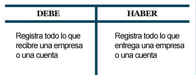Demostración
Para realizar una demostración objetiva, que coadyuve a comprender lo expuesto anteriormente, tomaremos una cuenta, a la cual denominaremos “Cartera”. Por supuesto que; no nos estamos refiriendo a la terminología utilizada en la actividad bancaria, sino al objeto o utensilio que normalmente utilizan las damas. Razón por la cual, nuestro supuesto es el siguiente:
Una damita, en la hora de almuerzo pide a su señor padre la obsequie $ 100.00 quien gentilmente le concede tal pedido. Antes de abandonar su hogar solicita $ 90.00 a su señora abuela quien también accede a tal solicitud.
Una vez en la calle, se encuentra con su novio y lo honra llevándolo al cine comprando dos localidades en $ 70.00 y antes de ingresar a la sala cinematográfica lo invita a servirse un helado pagando por tal atención $ 80.00
Utilizando las finalidades expresas de las columnas tituladas Debe y Haber la registración es:
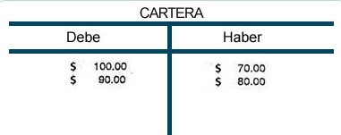Al mismo tiempo; el Debe y Haber nos sirven para determinar el saldo de una cuenta, obteniendo por diferencia en estas dos columnas, procedimiento que da lugar a determinar dos clases de saldos en función a las dos columnas existentes, siendo estos:
* Saldo deudor
Se establece técnicamente que una cuenta tiene saldo deudor, cuando la sumatoria de valores expresados en cantidades de la columna Debe es mayor a la columna Haber. Es decir el saldo deudor es equivalente al Debe menos el Haber.
- Demostración
Para realizar la correspondiente demostración, utilizaremos el supuesto ejemplo planteado en el anterior tema numeral, llegando a determinar el saldo de la cuenta Cartera de la siguiente manera:
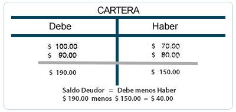Por tanto; el saldo de la cuenta Cartera es deudor y asciende a $ 40.00
* Saldo acreedor
Se establece técnicamente que una cuenta tiene saldo acreedor, cuando la sumatoria de valores expresados en cantidades de la columna haber es mayor a la columna Debe. Es decir, el saldo acreedor es equivalente al Haber menos el Debe.
- Demostración
Para realizar la correspondiente demostración, utilizaremos un supuesto ajeno al anterior, directo y totalmente genérico orientado únicamente a determinar el saldo de la cuenta "X" de la siguiente manera:
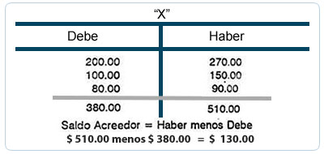Por tanto; el saldo de la cuenta "X" es acreedor y asciende a $ 130.00
La ley de movimiento de cuentas es el pilar fundamental para practicar registros contables, puesto que sin éste preciado instrumento no sería fácil efectuar registración.
Enunciados
La Ley del movimiento de cuentas, está conformada por diez enunciados que tipifican lo siguiente:
Además; la ley del movimiento de cuentas podemos esquematizarla en forma gráfica, razón por la cual los aumentos representaremos con el signo más (+) y las disminuciones con el signo menos (-) en forma alternada de izquierda a derecha y de arriba hacia abajo, y en vez de utilizar los verbos cargar y abonar estos reemplazaremos por sus respectivas columnas, es decir, el Debe y Haber llegando a tener lo siguiente:
Simbología:
La ley que acabamos de citar, es perfectamente aceptable especialmente para cuentas de balance por ser estas residuales. En cambio; tal situación no se suscita con cuentas de costo, gastos e ingreso por ser estas acumulativas, razón por la cual, diremos que normalmente, las cuentas de costo y gasto se cargan en cambio las cuentas de ingreso se abonan, es decir:
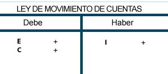Teoría del cargo o debito
Se denomina cargo o débito, al acto de registrar el valor de una cuenta en términos de unidades
monetarias en la columna titulada Debe.
Sin embargo debemos realizar algunas puntualizaciones al respecto, y diremos que las palabras cargo o
débito:
Por lo expuesto, las expresiones que seguidamente presentamos, inducen única y expresamente a practicar registros en la columna titulada debe:
Cargo la cuenta, Cargamos la cuenta, Cargue la cuente, Débito la cuenta, Debitamos la cuenta, Debite la cuenta, etc.
Teoría del abono o crédito
Se denomina abono o crédito, al acto de registrar el valor de una cuenta en términos de unidades
monetarias en la columna titulada Haber.
Sin embargo debemos realizar algunas puntualizaciones al respecto, y diremos que las palabras abono o
crédito:
Por lo expuesto las expresiones que seguramente presentamos, inducen única y expresamente a practicar registros en la columna titulada haber.
Abono la cuenta. Abonamos la cuenta, Abone la cuenta, Acredito la cuenta. Acreditamos la cuenta. Acredite la cuenta, etc.
Sistema de registración
Concepto
Se denomina sistema de registración al conjunto de elementos manuales, semimecanizados y/o electrónicos que utiliza una empresa para efectuar el registro de todas y cada una de las transacciones u operaciones suscitadas en esta. Por supuesto, la registración deberá practicarse de acuerdo con normas de contabilidad y disposiciones legales.
Objetivo
El objetivo de un sistema de registración contable, es proporcionar cualquier momento información de todas y cada una de las transacciones suscitadas en una empresa para la correspondiente toma de decisiones.
Registración de valores
En un asiento contable intervienen dos elementos:
El valor que ingresa o recibe, su importe se registra en el Debe.
El valor que sale o entrega, su importe se registra en el Haber.
Cabe señalar también que en una transacción comercial siempre intervienen dos personas cada uno recibe y entrega.
Se denomina asiento al registro que expresamente se práctica en un comprobante de diario, y corresponde a una transacción correctamente analizada, tomando en cuenta normas, reglas, leyes y procedimientos de contabilidad.
Conformación de un asiento
Un asiento necesariamente debe estar conformado por lo siguiente:
Clasificación de los asientos
Los asientes para mejor estudio se clasifican en:
Asientos por su fondo
Asientos por su forma
Asientos por su fondo
Se denominan así a tocios aquellos registros que se exponen en comprobantes de diario y tienen por
finalidad reflejarnos o mostrarnos el contenido mismo de la transacción efectuada.
Los asientos per su fondo se sub clasifican en:
Asientos de apertura
Se denominan así, a todos aquellos registros que se exponen en comprobantes de diario y tienen por finalidad abrir o aperturar el juego de registros, se los practica solo y únicamente al inicio de actividades de una empresa.
Asientos de ejercicio
Se denominan así, a todos aquellos registros que se exponen en comprobantes de diario y tienen por finalidad reflejarnos todas y cada una de las transacciones suscitadas en una empresa, se les practica diariamente y a continuación de los asientos de apertura.
Asientos de ajuste
Se denominan así a todos aquellos registros que se exponen en comprobantes de diario y tienen por finalidad incorporar operaciones pendientes, modificar saldos de ciertas cuentas y/o incorporar disposiciones contables y legales, se los practica periódicamente y están a continuación de los asientos de ejercicio.
Asientos de cierre
Se denominan así, a todos aquellos registros que se exponen en comprobantes de diario y tienen por finalidad cerrar todas las cuentas que hayan tenido movimiento, se los practica solo y únicamente al cierre de cada ejercicio y se ubican seguidamente a los asientos de ajuste.
Asientos de reapertura
Se denominan así, a todos aquellos registros que se exponen en comprobantes de diario y tienen por finalidad reabrir o reaperturar un nuevo juego de registros, se los practica solo y únicamente al reinicio de actividades de una empresa.
Asientos por su forma
Se denominan así, a todos aquellos registros que se exponen en comprobantes de diario y tienen por finalidad reflejarnos o mostrarnos el número de cuentas que intervienen en estos.
Los asientos por su forma se sub-clasifican en:
- Asientos simples o sencillos
Se denominan así, a todos aquellos registros que se exponen en comprobantes de diario en los cuales intervienen solo y únicamente dos cuentas, una que se carga y otra que se abona.
- Asientos compuestos o dobles
Se denominan así, a todos aquellos registros que se exponen en comprobantes de diario en los cuales intervienen más de dos cuentas.
Se denominan registros de diario al conjunto de comprobantes de diario (ingreso, egreso y traspaso) utilizados en una empresa para practicar el registro de sus transacciones diariamente. Estos registros reciben también las denominaciones de libro de primera entrada o libro diario y constituyen parte de los libros principales. Se denomina libro primera entrada, por ser el primer registro que utiliza una empresa para practicar por primera vez la contabilización de sus transacciones u operaciones suscitadas en ella. Se denomina libro diario por ser el registro que utiliza una empresa para practicar día a día y en orden progresivo la contabilización de las transacciones u operaciones suscitadas en ella por muy importantes o insignificantes que estas sean.
Objetivo
El objetivo de los comprobantes de diario es agrupar las transacciones de similar naturaleza en sus correspondientes cuentas y a través de estas proporcionar información referida a las operaciones suscitadas en una empresa cronológicamente.
Comprobantes de diario
Se denominan comprobantes de diario al conjunto de hojas reimpresas especialmente para tal efecto, que tienen por finalidad reemplazar a los clásicos libros diarios. Para que estas evidencias contables, tengan el sustento necesario deberán cumplir con todas disposiciones descritas en párrafos anteriores.
Formalidades
Se denominan formalidades a las condiciones tanto intrínsecas como extrínsecas con las que deben cumplir los comprobantes de diario, mismas que mencionamos en párrafos anteriores, es decir, las condiciones que deben cumplir los libros principales.
Diseño y conformación
El diseño y conformación de un comprobante de diario, no cuenta con norma estandarizada de uso mundial, por tanto; responde a requerimientos y necesidades del sistema contable implantado en la empresa, razón por la cual puede variar como acontece en la vida real.
Diseño
El diseño del comprobante de diario y uno de los más generalizados que estudiaremos, es el que incluye cuatro columnas verticales, seguidas de tres horizontales en la parte inferior, que a continuación exponemos.
Conformación
La conformación del comprobante de diario que utilizaremos está en función al diseño de éste e incluye lo siguiente:
Resumiendo lo anteriormente expuesto, el diseño y conformaron del comprobante de diario que estudiaremos es el siguiente:
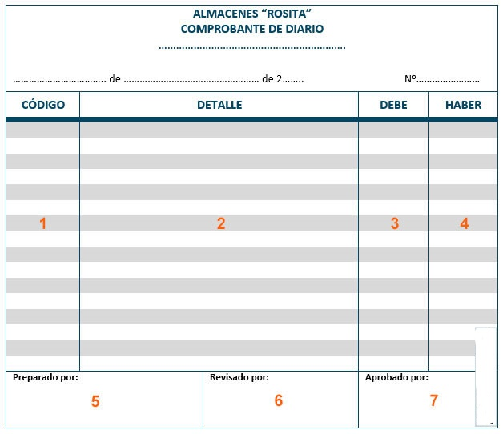Clases de comprobantes de diario
Los comprobantes de diario para un mejor estudio se clasifican en:
Comprobantes de diario ingreso
Se denominan así, a todos aquellos registros que incluyen y exponen información referente a la contabilización solo y únicamente de transacciones u operaciones que generan ingreso real de fondos a la empresa.
Diseño y conformación
El diseño y conformación de un comprobante de diario ingreso es el siguiente:
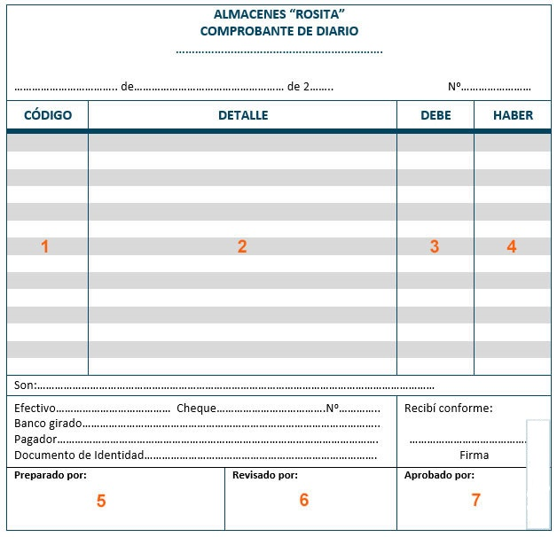Comprobantes de diario egreso
Se denominan así, a todos aquellos registros que incluyen y exponen información referente a la contabilización solo y únicamente de transacciones u operaciones que generan salida real de fondos de la empresa.
Diseño y conformación
El diseño y conformación de un comprobante de diario egreso es el siguiente:
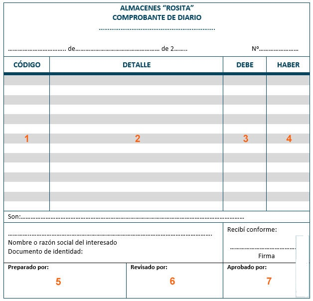Comprobantes de diario traspaso
Se denominan así, a todos aquellos registros que incluyen y exponen información referente a la contabilización solo y únicamente de transacciones u operaciones que no generan ingreso ni salida de fondos de la empresa, es decir operaciones sobre la base del devengamiento.
Diseño y conformación
El diseño y conformación de un comprobante de diario traspaso se presenta como el primer grafico de comprobante diario.
* Numeración y copias de los comprobantes de diario
La numeración de estos registros tiene que ser paralela entre sí. Es decir:
Para la numeración de los comprobante; citados, la letra "N" representa el último número del comprobante utilizado durante el ejercicio.
Además, no olvidemos lo siguiente:
Los libros de contabilidad son elementos donde se registran y almacenan todas y cada una de las transacciones u operaciones comerciales suscitadas en una empresa Su estudio detenido y minucioso entraña un interés especial, ya que en dichos libros quedaran fiel y verazmente reflejadas las operaciones, y mucho dependerá que estos registros resulten claros. La parte de la contabilidad financiera encargada de estudiar detenidamente y al mismo tiempo enseñarnos la forma de practicar los registros, es el Sistema de registración tratado en Tema No 1 titulado Introducción y generalidades de la contabilidad.
Clasificación de los libros de contabilidad
Para mejor estudio los libros de contabilidad se clasifican desde el punto de vista legal y contable en:
Libros obligatorios o principales
Son todos aquellos elementos de registro que responden a disposiciones legales, considerando su
utilización de carácter obligatorio.
El comerciante debe llevar obligatoriamente los siguientes libros:
Libros voluntarios o auxiliares
Son todos aquellos elementos de registro que no responden a disposiciones legales, es decir estos
libros, pueden o no llevarse en una empresa, por ser de carácter voluntario. Pero si ésta empresa opta
por llevar estos libros, necesariamente deberán cumplir con las condiciones y requisitos descritos para
los libros obligatorios.
Entre estos libros podemos mencionar:
Existen otros, con menor importancia con relación a los citados.
Se denominan registros de mayor al conjunto de datos contables debidamente clasificados de acuerdo al movimiento (Debe y/o Haber) de las cuentas, que previamente fueron asentadas en comprobantes de diario. Estos registros reciben también las denominaciones de libro de segunda entrada o libro centralizador de cuentas y constituyen parte de los libros principales desde el punto de vista técnico. Se denomina libro segunda entrada, por ser el segundo registro que utiliza una empresa para practicar por segunda vez la registración de sus transacciones u operaciones inicialmente incorporadas en comprobantes de diario. Se denomina libro centralizador de cuentas, por ser el registro que utiliza una empresa para clasificar los movimientos de las cuentas apropiadas en los comprobantes de diario. Por lo tanto; ésta clase de registros (mayor) constituyen una de las más importantes fuentes de información. Si bien los comprobantes de diario tienen un carácter inicial y generalista por ser el punto de partida del sistema de registración contable, estos no proporcionan información sobre el estado de cada cuenta apropiada en el proceso contable por no poseer información clasificada. Razón por la cual, es necesario que las transacciones registradas en comprobantes de diario se clasifiquen metódica y sistemáticamente mediante su traspaso a los correspondientes registros de mayor, para de esta manera contar con información de acuerdo a la naturaleza de las transacciones.
Objetivo
El objetivo de los registros de mayor, es agrupar metódica y sistemáticamente el movimiento de todas y cada una de las cuentas apropiadas en comprobantes de diario con la finalidad de totalizar sumatorias en débitos (Debe) y/o en créditos (Haber), para de ésta manera poder determinar sus saldos y proporcionar información clasificada que marcará el inicio para preparar estados financieros.
Condiciones y requisitos
Se denominan condiciones y requisitos a las formalidades intrínsecas como extrínsecas que deben cumplir los registros de mayor, mismas que fueron citadas detalladamente en el Tema titulado Registros de diario, en razón que estos instrumentos que compilan información clasificada también forman parte de los libros obligatorios.
En cuanto al diseño y conformación de los registros de mayor, diremos que estos no cuentan con una norma estandarizada de uso mundial, por tanto responde a requerimientos y necesidades del sistema contable implantado en la empresa, razón por la cual puede variar como acontece en la vida real.
Diseño
El diseño de los registros de mayor y uno de los más generalizados que utilizaremos, es el que incluye cinco o seis columnas verticales que seguidamente exponernos.
Conformación
La conformación de los registros de mayor que utilizaremos está en función al diseño do este e incluye lo siguiente:
Resumiendo lo anteriormente expuesto, el diseño y conformación de los registros de mayor que estudiaremos presentamos seguidamente:
Registro de mayor de cinco columnas:
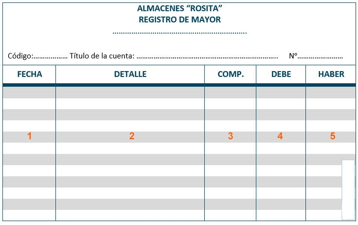Registro de mayor de seis columnas:
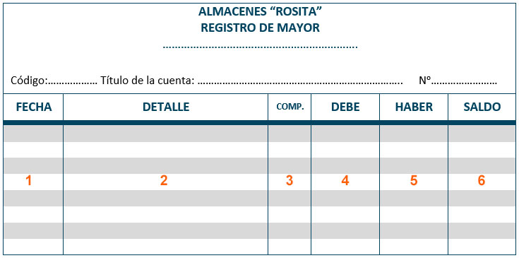Otras formas de mayor
Los registros de mayor poseen una vanada diversidad de diseños que radican expresamente en el número de
columnas y la finalidad de éstas, originados en función al sistema de contabilidad implantado como las
necesidades y requerimientos de una empresa, razón por la cual no haremos referencia alguna, puesto que
los anteriores diseños cumplen a cabalidad las exigencias para obtener una adecuada registración.
Sin embargo, para aligerar el trabajo (no están aceptados por disposiciones legales) se suelen utilizar
los mayores en "T" o reglas "T", denominados así por asemejarse a la configuración de la letra T.
Siendo su diseño y conformación como sigue: